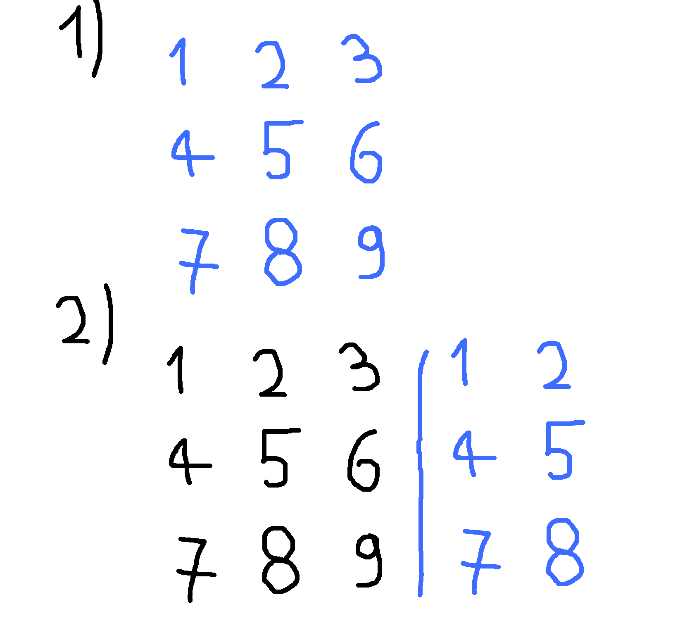
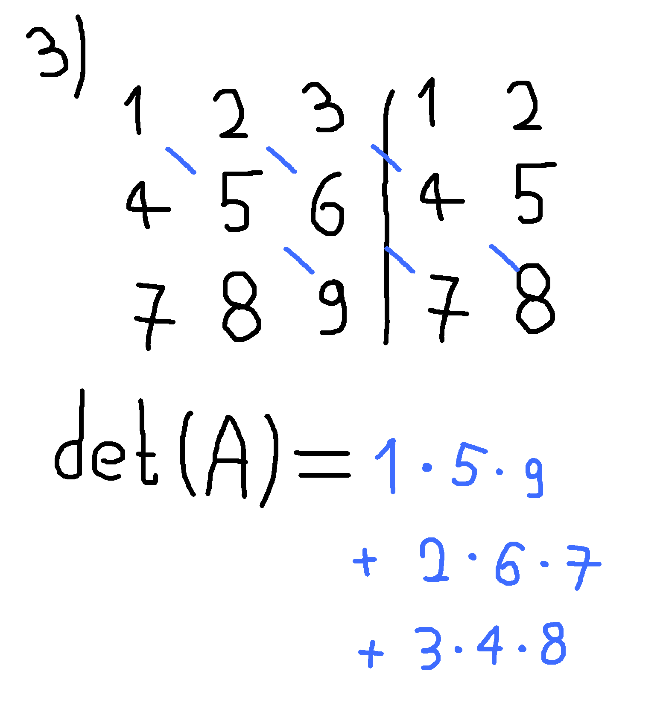
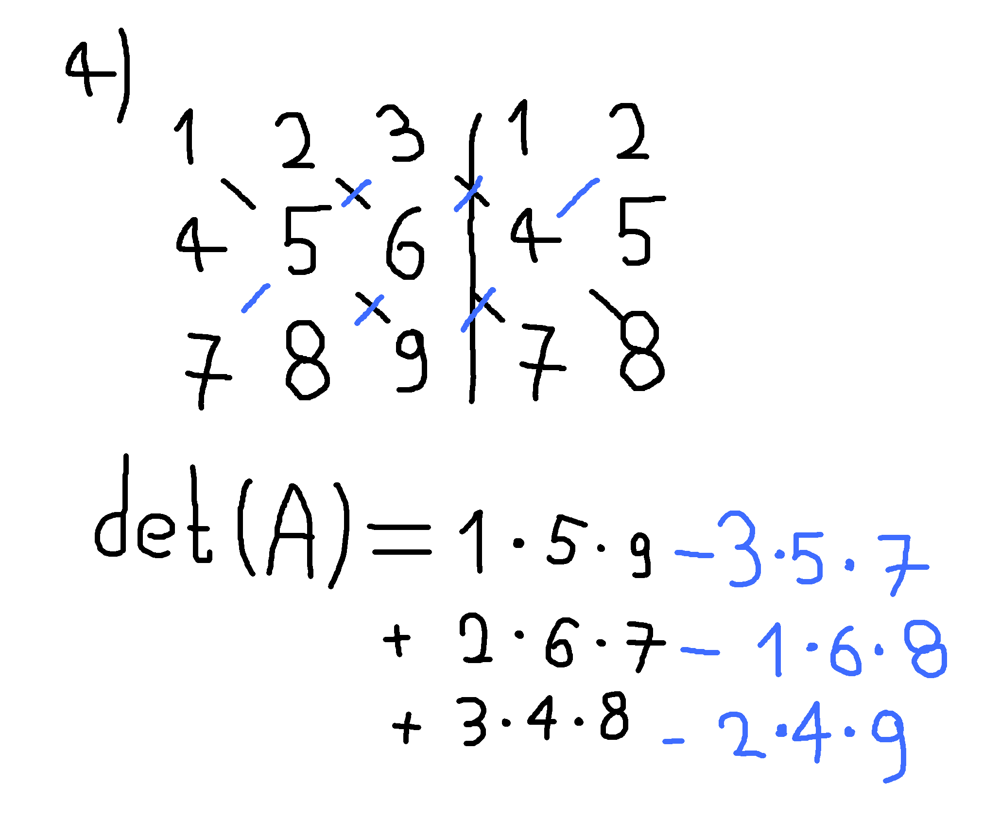
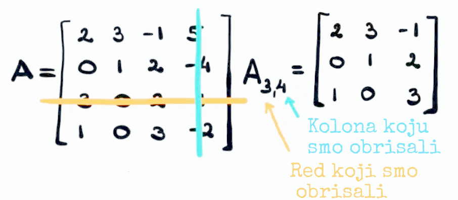
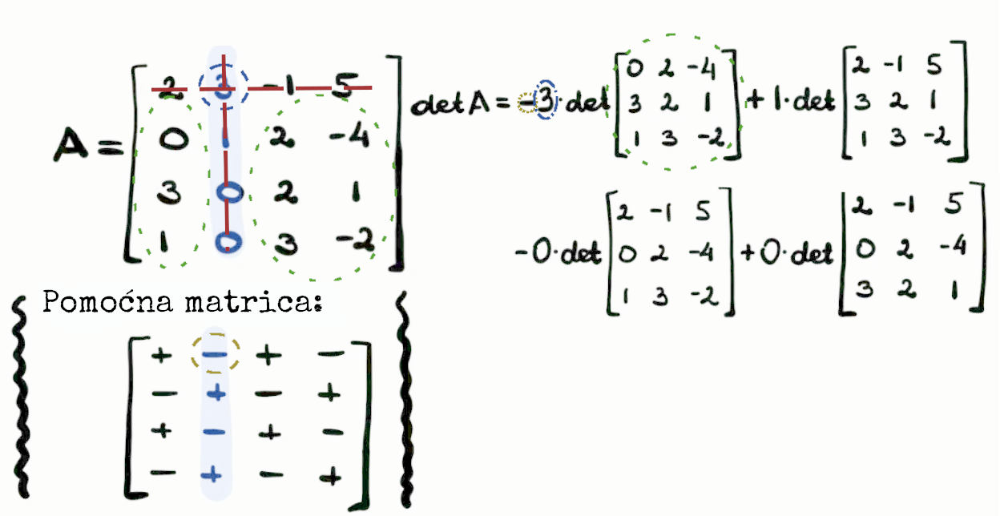

Determinante
Kako se računaju i njihova pravila
Autori: Aleksandar Vesić, Nemanja Potkonjak
Uvod u determinante
Determinanta je skalarna funkcija elemenata kvadratne matrice. Koristi se za rešavanje sistema jednačina, nalaženje inverza matrica i razumevanje linearnih transformacija.
Determinanta matrice A obično se označava sa det(A) ili |A| za matricu A .
Determinanta 2×2 matrice
Za matricu \( A = \begin{pmatrix} a & b \\ c & d \end{pmatrix} \),
Primer:
\( A = \begin{pmatrix} 3 & 1 \\ 2 & 4 \end{pmatrix} \)
\[ \text{det}(A) = (3)(4) - (1)(2) = 12 - 2 = 10 \]
Sarusovo pravilo (skraćenica za 3×3)
Samo za 3×3 matrice!
Napiši prve dve kolone ponovo sa desne strane.
Množi dijagonalno (levo u desno = pozitivno, desno u levo = negativno).

Korak 1/2: Originalna matrica i dodavanje dve prve kolone

Korak 3: Sabiranje pomnoženih dijagonala

Korak 4: Oduzimanje pomnoženih dijagonala
← Prethodno
Sledeće →
Primer:
\( A = \begin{pmatrix} 1 & 2 & 3 \\ 4 & 5 & 6 \\ 7 & 8 & 9 \end{pmatrix} \)
\[ \text{det}(A) = (1 \cdot 5 \cdot 9 + 2 \cdot 6 \cdot 7 + 3 \cdot 4 \cdot 8) - (3 \cdot 5 \cdot 7 + 1 \cdot 6 \cdot 8 + 2 \cdot 4 \cdot 9) \]
\[ = (45 + 84 + 96) - (105 + 48 + 72) = 225 - 225 = 0 \]
Determinanta 4×4 matrice
Metoda: Laplasov razvoj (razvijanje po bilo kom redu/koloni).
\( A = \begin{pmatrix} a & b & c & d \\ e & f & g & h \\ i & j & k & l \\ m & n & o & p \end{pmatrix} \)
Izaberi red (npr. prvi red).
Za svaki element, pomnoži ga sa determinantom 3×3 podmatrice koja ostane nakon uklanjanja njegovog reda i kolone, sa naizmeničnim predznacima.
\[ \text{det}(A) = a \cdot \text{det}(3×3) - b \cdot \text{det}(3×3) + c \cdot \text{det}(3×3) - d \cdot \text{det}(3×3) \]
Pomoć za podmatrice:

Primer:
\( A = \begin{pmatrix} 2 & 3 & -1 & 5 \\ 0 & 1 & 2 & -4 \\ 3 & 0 & 2 & 1 \\ 1 & 0 & 3 & -2 \end{pmatrix} \)

Rešenje: 56
Determinanta 3×3 matrice (Laplasov razvoj)
Metoda: Razvijanje po prvom redu (ili bilo kom redu/koloni).
\( A = \begin{pmatrix} a & b & c \\ d & e & f \\ g & h & i \end{pmatrix} \)
\[ \text{det}(A) = a(ei - fh) - b(di - fg) + c(dh - eg) \]
Primer:
\( A = \begin{pmatrix} 1 & 2 & 3 \\ 4 & 5 & 6 \\ 7 & 8 & 9 \end{pmatrix} \)
\[ \text{det}(A) = 1(5 \cdot 9 - 6 \cdot 8) - 2(4 \cdot 9 - 6 \cdot 7) + 3(4 \cdot 8 - 5 \cdot 7) \]
\[ = 1(45 - 48) - 2(36 - 42) + 3(32 - 35) \]
\[ = (-3) - 2(-6) + 3(-3) = -3 + 12 - 9 = 0 \]
Vrednost determinante
Ne menja se, ako: sve vrste i odgovarajuće kolone zamene mesta; jednoj vrsti (koloni) dodamo drugu pomnoženu nekim brojem. Menja znak ako dve vrste (kolone) razmene mesta; Uvećava se k puta ako jednu vrstu (kolonu) pomnožimo sa k; Jednaka je nuli ako: jedna vrsta (kolona) sadrži samo nule; dve vrste (kolone) su jednake; dve vrste (kolone) su proporcionalne.
Primene determinanti
Rešavanje sistema jednačina (Kramerovo pravilo ).
Provera da li je matrica invertibilna (ako je det = 0, nije invertibilna).
Koristi se u analizi, fizici i inženjerstvu za transformacije.
Zaključak
2×2: Jednostavno \( ad - bc \).3×3: Laplasov razvoj ili Sarusovo pravilo.4×4+: Laplasov razvoj.Pravila: Zamena dve kolone/vrste menja znak determinante; množenje jedne kolone/vrste utiče na celu determinantu i jednaka je nuli ako bar jedna kolona/vrsta sadrži sve nule.
Pitanja?
"Ima li pitanja o determinantama?"
Hvala na pažnji!